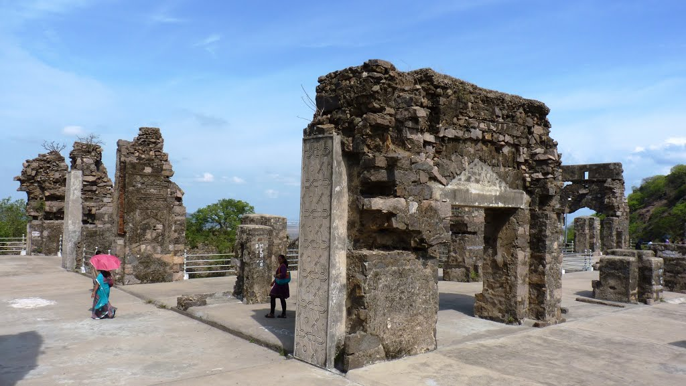
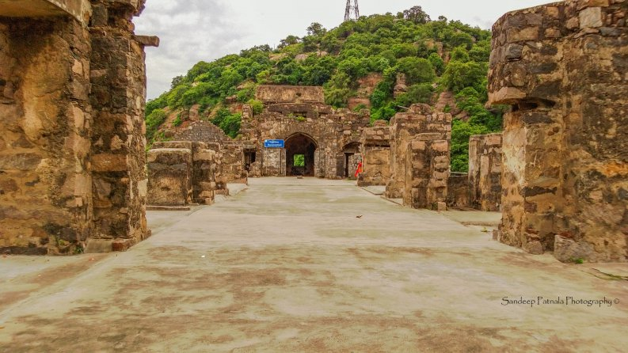
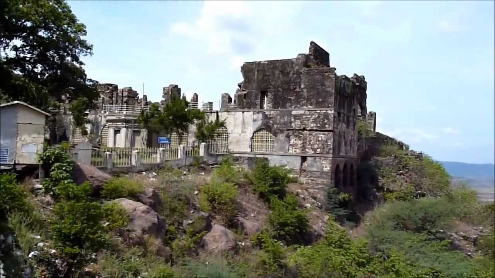

To Search for Holiday Ideas, Plan Your Trip and more.
WELCOME TO ANDHRA

Kodapalli Fort
The Kondapalli Fort is also known as the Kondapalli Killa. It is located in the Krishna District of Vijayawada. It was built by Prolaya vema Reddy of the Kondavid Dynasty. Initially it was a pleasure palace and a center for the business disculssions of the kingdom along with the Kondavid Fort in the Guntur District.
The forest area around is full of the ponuku tress. These are famous for their lightwood which is used for the famous traditional toys of the Kondapalli area. The fort was built in 1360 by the Reddy dynasty and then passed on to the Gajapati rulers of Orissa, then to Krishnadevaraya of Vijayanagara Empire and then in the hands of the Muhammedan rulers. Much later it was acquired by the British East India Company Authorities. The fort was even acquired by the famous Nizam-ul-Mulk of the mughal Empire for some time in the 16th century.

The beautiful fort has three successive doors with the majestic first one known as the Dargah Darwaza after the name of the tomb of Gulab Shah who was killed here in a battle. The other two gateways are known as Golconda gateway and the Jaggaiahpet Gateway. The fort has many towers and battlements. At the far end of the Fort complex is the Tanisha Mahal which is in the crest in between two hills. It is completely in ruins now but it can be found that when it was in a good state, it had a floor with many chambers and beautifully carved towers and on the upper floor was a huge hall. There is also a deep reservoir on a lovely spring here. The spring water is said to be so cold that it causes fever. There is also a British Barrack with 8 large rooms and a separate annexure as well. There is also a British Cemetery adjoining the fort complex.
The Kondapalli Fort is a significant artistic tourist attraction. This is because it has the colorful toys crafting. These toys are made using a light white wood and are well known as Kondapalli toys. The toys crafting include mythological figures, animals and human being figures. In Telugu toys are referred as ‘Bommalu’ and the toys are a reputed products sold as ‘Kondapalli Bommalu’.

Kondapalli Fort has three imposing entrance gates. The main gate is known as ‘Dargha Darwaza’ and is built of a granite block. Even today, the fort has many numbers of wall towers and battlements. Within the premises there is a cemetery and an English barrack.
The Kondapalli Fort Vijayawada has magnificent edifices on the hill top and these structural edifices are one of the best attractions. They were redesigned during the rule of Qutub Shahi. The fort attractions include the Dancing hall, the Rani Mahal and the Arched hall. There is a dargah of a renowned Persian saint, Gareeb Sahib, beside the Dargah Darwazah gate. Encircling the fort is the Knodapalli village famous for its bright colored toys depicting Indian motifs.
This is a treasure of the east ghat and features amazing greenery that anyone visiting Vijayawada must not miss this mind blowing fort. Best time to visit is between September and March.